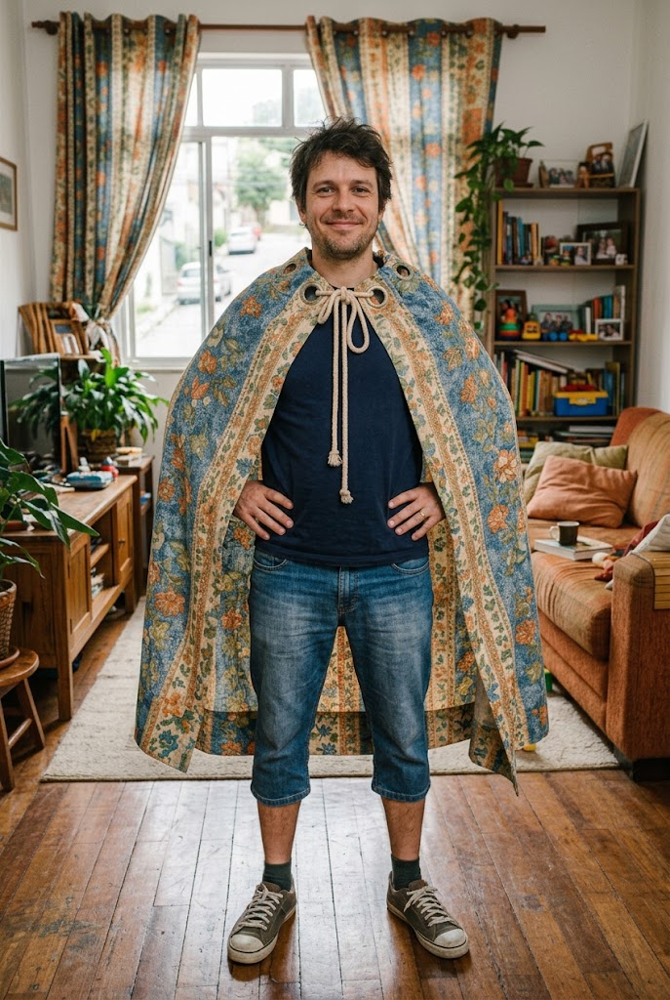

Na manhã seguinte ao incidente, Ademar encarou o espelho da sala e percebeu que a vida de um herói radioativo exigia mais do que apenas zumbidos no corpo e olhos que mudavam de cor com o tempo: exigia uma identidade visual. O problema era que o orçamento do mês não previa trajes de super-herói sob medida, restando a ele improvisar com o que tinha em mãos. Seus olhos se fixaram, então, na pesada cortina de linho desbotado da sala de estar, um tecido gasto, mas com o caimento nobre de quem já havia enfrentado anos de sol e poeira
Com uma tesoura cega de cozinha e um rolo de linha que pertenceu à sua avó, Ademar deu início ao complexo projeto de alfaiataria heroica. Cortar a cortina sem estragar completamente a decoração da casa foi um desafio quase tão grande quanto controlar as picadas das criaturas em suas veias, mas, após três horas de pura insistência, uma peça começou a ganhar forma. Entre nós tortos, agulhadas nos dedos e pequenos curativos, a velha cortina da sala renasceu transformada em uma capa imponente, embora ligeiramente torta e exalando um forte cheiro de poeira guardada.
Ao amarrar as pontas ao redor do pescoço e dar um passo à frente, Ademar sentiu o peso dramático do seu novo uniforme cobrindo suas costas. A capa não tinha o brilho das trajetórias de cinema, mas trazia uma imponência doméstica inegável que balançava suavemente a cada movimento brusco do seu corpo. Satisfeito com o resultado improvisado, ele deu o nó definitivo na gola, pronto para enfrentar os perigos da adequação devidamente trajada.
link para o proximo capitulo